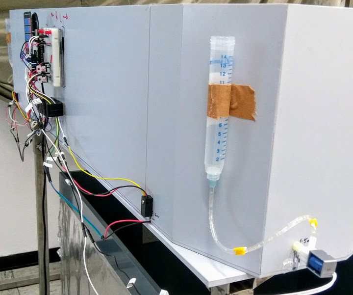

Autoreward 2

The motivation to start this project arises when we started to include a new behavioral paradigm in the lab, an alternation T-mace with return arms (like the one in Wood e_t al._ 2000). We wanted a clean performance, as well as a clean video record, so we consider necessary to interfere neither with the animal attention (mice, how they are!) nor the camera’s field of view. I decided then to give a try to the new hobby I was getting into, “Do-It-Yourself” (DIY) stuff.
In my head, it was pictured very simple. At the end of the day, I just needed a) something to detect the animal passing by, b) something to deliver a drop of water and c) something to make it happen in a coordinated way. And that’s what Autoreward2 is, no more, no less.
Well perhaps it is a bit more. So far, the project can:
- Detect when the animal reaches the end of any of the two arms.
- Deliver a small drop of fluid through the corresponding licking port (easy to make it happen in the opposite, if wanted).
- Give visual cues to the experimenter, indicating which arm has been reached.
- Allow to select different modes of working for different working protocols: ‘Waiting for selection’, ‘Habituation’, ‘Training’, ‘Experimental’ and “Filling and cleaning” modes (and is ready to include more!).
To achieve it, I decided for very simple approach. A couple of cheap infrared emitters are continuously read by an UNO R3 board. Breaking any of the beams triggers the signal to open the corresponding solenoid valve, connected to the fluid tank. That lets the liquid flow by gravity for around 75 milliseconds, resulting in a single drop at the tip of the licking port.

There is a delay after each detection, to avoid repetitive delivery if animals don’t leave the area. A couple LEDs mounted in the bare-board (out of animal sight) light up when the process is triggered, one for each side. They also work as indicators for the ‘Waiting for selection’ mode, when they are continuously on, meanwhile no option is choose or the ‘return to waiting mode action’ is pressed.
The selection is made through a 4×4 membrane keypad. Right now, only options 1 to 4 are programmed, making up to 12 more programs available! When any section is made, the in-built LED blinks the corresponding times and the system is ready to work. At any moment, pressing any key makes the system reset to the waiting mode. As easy as that.
Everything is powered by a regular 9V wall adapter, giving 3.3V to the LEDs and Infrared detectors, and 9V to the solenoids. Of course, it is possible to use a 9V batterie to power it. To avoid damage coming from the solenoid discharges, the circuit is protected by a couple of diodes at this level.
And that’s all, it’s simple. The most important thing: it works. The other most important thing: it costs around 80€. Here is the to-buy list (or equivalent):
- Elegoo UNO R3 (I found them for 10€, with USB cable)
- BreadBoard + Acrylic base (7€)
- 9V 1A Wall power supply (9€)
- 2x InfraRed beams, 5mm (15€ both, the 3mm ones are even cheaper)
- 2x Mini-Solenoid valves (10€ both)
- 2x red LEDs
- 4x 1 KΩ resistors
- 2x TIP120 Transistors
- 2x 1N4001 diodes
- Wiring (set of jumpers for less than 10€)
- ‘Velcro’ to attach the acrylic base where the boards are mounted.
- Plastic tubing and laboratory sample tubes, modified with turning siringe tips to attach/deattach the tubing easily.
- 2x or 4x weak magnets to fix the tubes to the walls.
Feel free to access the Github page or the Arduino forum post to obtain the code, check for the circuit sketch, and see some pictures.
PD: If someone is scandalized by the code, I am getting better on it, it is not my main strength. Please, improve it! Of course, I have in mind many possible upgrades such as a screen, a SD card port, to change the Keypad for a wireless interface (tactile?) … Did someone say smartphone plus Bluetooth? Going fancy, a barcode reader to easily introduce subjects’ data… And here is where I relay in the open-access idea, I offer it and hopefully someone implement any of the ideas. If so, remember to share!
Jesús J. Ballesteros
Contact me: